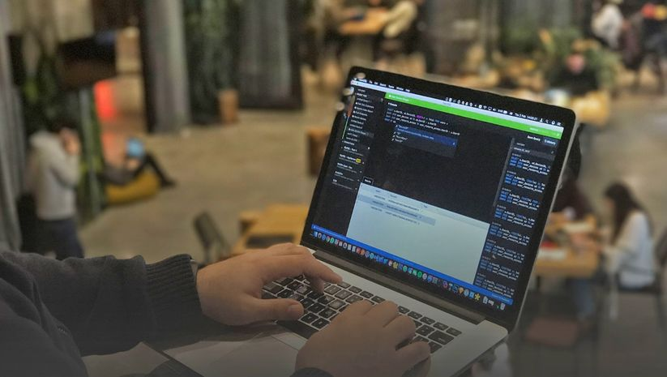
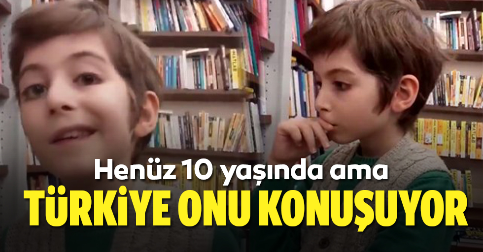

Münazara Oluştur
Özel Danışma Oluştur
Yardım
Profil
Menü
========================
Felsefe
Genel Kültür
Matematik
Fizik
Oyun
Teknoloji
Tasarım
Sanat
Girişimcilik
Yazılım
Psikoloji
Sosyoloji
Güncel Konular
İnsanın dış görünüşüne bakarak asla hüküm vermemeliyiz. Buna katılıyor musunuz?
İnsan önemli bir kararı kendi başına vermemelidir. Buna katılıyor musunuz?
Üniversite öğrenimi bütün öğrencilere sağlanmalıdır. Buna katılıyor musunuz?
Bir toplumun gelişmesinde ihtiyarların mı, yoksa gençlerin mi katkısı daha büyüktür?
Kitap daha çok gençlikte mi yaşlılıkta mı okunmalıdır?
Eğitim Sistemi
Başarıda çalışmak mı, şans mı önemlidir?
İşsizlik
Sosyal Medya Kullanımı
Uygarlığın gelişmesinde sanat mı, bilim mi önemli?
Başarıya ulaşmak için zekâ mı, çalışmak mı önemlidir?
Deprem Hazırlığı
Ülkenin gelişiminde spor etkili midir ?
Telefon çocuklara küçük yaşta verilmeli midir?
HABERLER
Şu An Devam Eden Münazaralar
İnsanın dış görünüşüne bakarak asla hüküm vermemeliyiz. Buna katılıyor musunuz?
İnsan önemli bir kararı kendi başına vermemelidir. Buna katılıyor musunuz?
Üniversite öğrenimi bütün öğrencilere sağlanmalıdır. Buna katılıyor musunuz?
Bir toplumun gelişmesinde ihtiyarların mı, yoksa gençlerin mi katkısı daha büyüktür?
Kitap daha çok gençlikte mi yaşlılıkta mı okunmalıdır?
Eğitim Sistemi
Başarıda çalışmak mı, şans mı önemlidir?
İşsizlik
Sosyal Medya Kullanımı
Uygarlığın gelişmesinde sanat mı, bilim mi önemli?
Başarıya ulaşmak için zekâ mı, çalışmak mı önemlidir?
Deprem Hazırlığı
Ülkenin gelişiminde spor etkili midir ?
Telefon çocuklara küçük yaşta verilmeli midir?
Takip Ettikleriniz
İnsanın dış görünüşüne bakarak asla hüküm vermemeliyiz. Buna katılıyor musunuz?
İnsan önemli bir kararı kendi başına vermemelidir. Buna katılıyor musunuz?
Üniversite öğrenimi bütün öğrencilere sağlanmalıdır. Buna katılıyor musunuz?
Bir toplumun gelişmesinde ihtiyarların mı, yoksa gençlerin mi katkısı daha büyüktür?
Kitap daha çok gençlikte mi yaşlılıkta mı okunmalıdır?
Eğitim Sistemi
Başarıda çalışmak mı, şans mı önemlidir?
İşsizlik
Sosyal Medya Kullanımı
Uygarlığın gelişmesinde sanat mı, bilim mi önemli?
Başarıya ulaşmak için zekâ mı, çalışmak mı önemlidir?
Deprem Hazırlığı
Ülkenin gelişiminde spor etkili midir ?
Telefon çocuklara küçük yaşta verilmeli midir?

